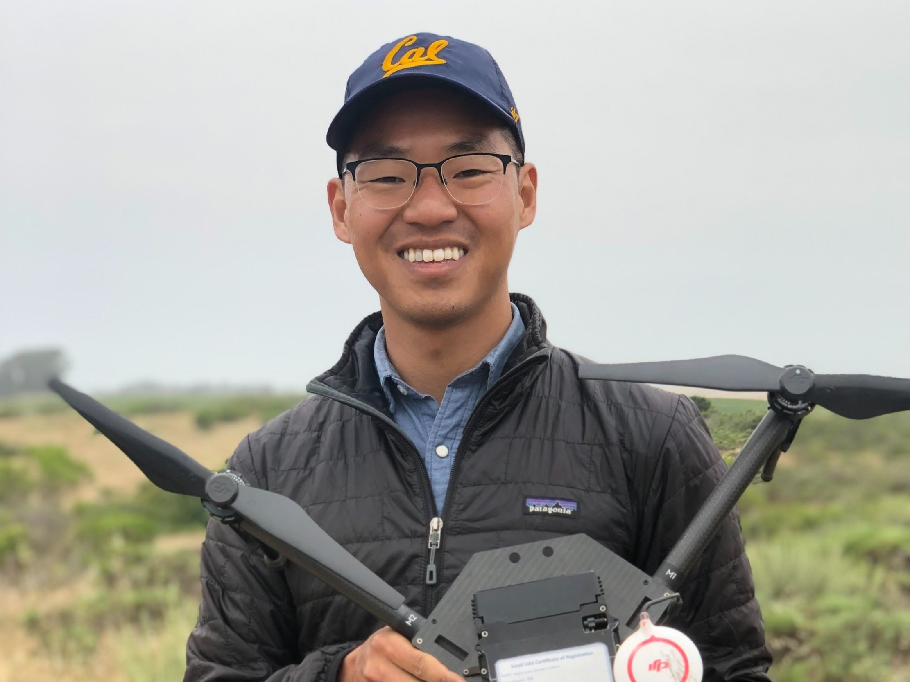
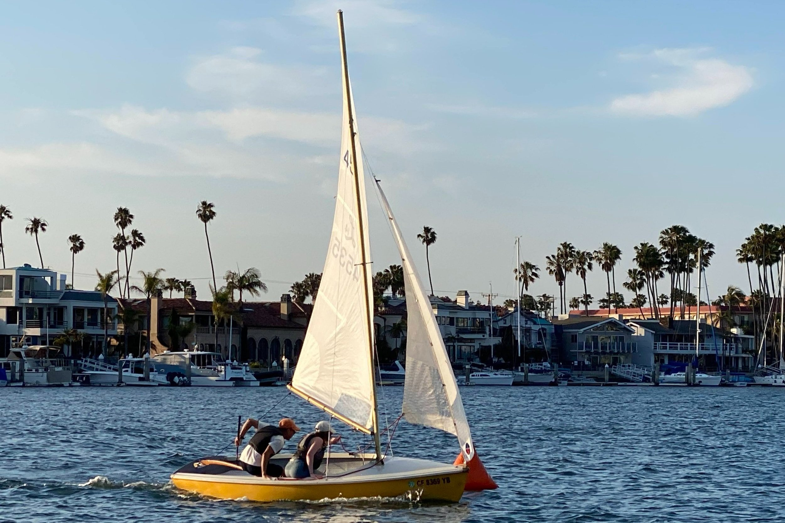
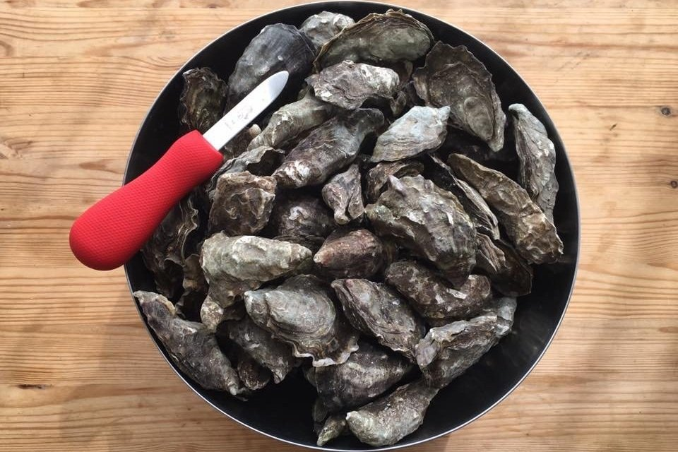
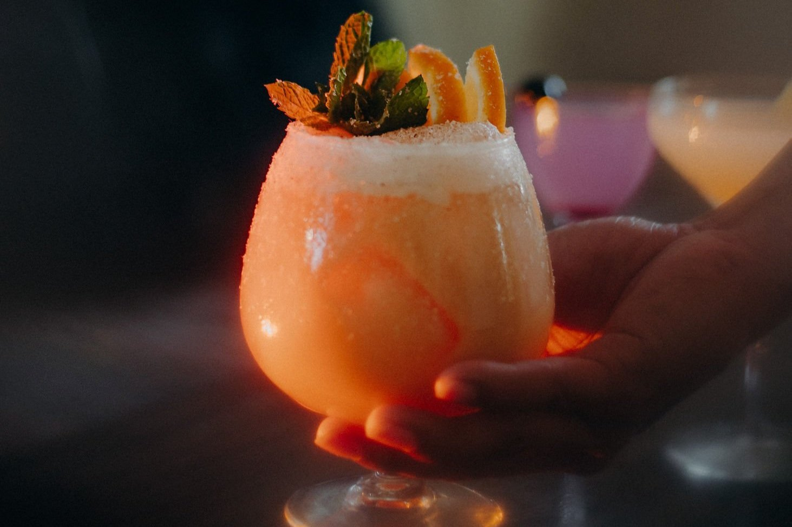
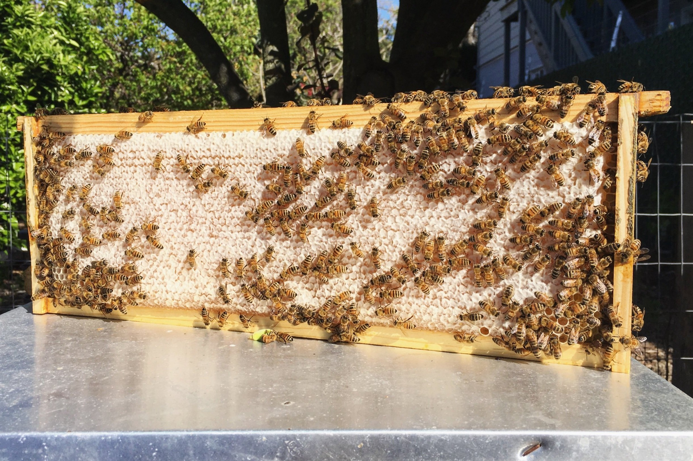
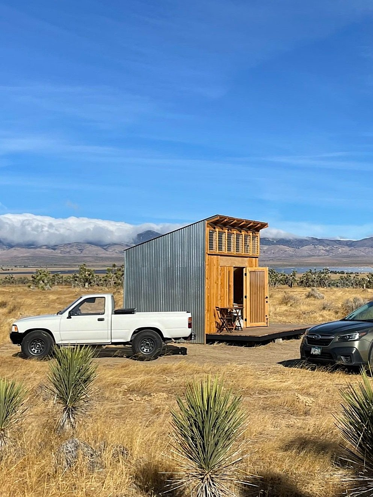
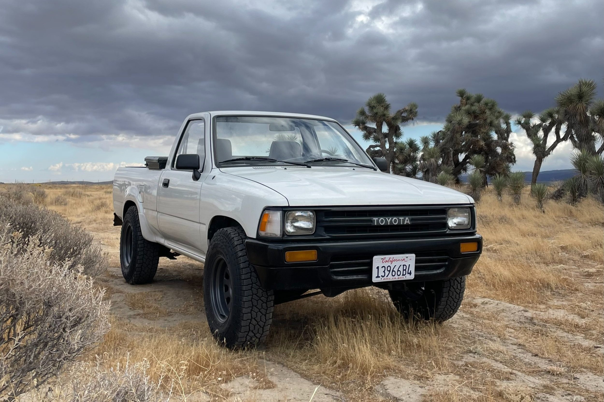

Woodworking
I currently work on small projects at my home shop. Wooden purse »
I’m also studying traditional boatbuilding at the Arques School.

Sailing
I’m a novice sailor that dreams of sailing across the Pacific. Typically, you’ll find me sailing around Alamitos Bay in Sunrise, my 1980 Lido 14 (#4720).

Food Systems
My fascination with food systems has long driven my personal and career interests.
In academia my master’s thesis was about aquaculture and I served as a graduate student instructor for Food and the Environment at UC Berkeley.
I’ve raised chickens and bees, and daydream of operating an oyster farm.

Mixology
Primarily a botanical exploration and lens to appreciate the unique ways different cultures harness the plants, land, and climate of their region.

Beekeeping
I learned the basics of beekeeping while working with Yolanda Burrell at Pollinate Farm & Garden (Oakland, CA). Honeybees are absolutely fascinating and while I currently do not have my own hive, I would be interested in finding opportunities to beekeep again.

Tiny Cabin
I built this 120 square foot tiny cabin on 5 acres of high desert near the Antelope Valley Poppy Reserve. I visit in the winter and spring to enjoy the incredible sunrises and sunsets, and occasionally to woodwork in the peace of the high desert.

Toyota Pickup
I daily drive a 1991 Toyota Pickup (2WD, 5-speed manual, 22RE).
Photography
I was an active photographer until about 2015.